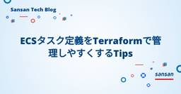
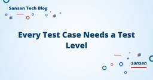

Sansan Tech Blog
https://buildersbox.corp-sansan.com/
Sansanのものづくりを支えるメンバーの技術やデザイン、プロダクトマネジメントの情報を発信
フィード
政治学研究からプロダクト開発へ。 「面白い」を入り口に広がる挑戦
Sansan Tech Blog
Sansan株式会社では、新卒入社のエンジニア・研究員たちが数多く活躍しています。 なぜSansanを選び、入社後にどんな経験を積み、これから何を目指しているのか。 「Sansan Sakura Stories」では、その「過去・現在・未来」を通して、一人ひとりの等身大の姿をお届けします。今回のインタビューでは、2024年に新卒で入社し、現在は顧客マスターマネジメント「Sansan Data Intelligence」を支えるマスターデータ基盤で、データ分析や開発に携わる金髙に話を聞きました。 金髙 右京 / Ukyo KanetakaCTO室 Data Analyticsグループ早稲田大学大…
1日前

企業ニュース解析エンジン群のECSからCircuit（EKS）への移行（インターン成果報告）
Sansan Tech Blog
はじめに はじめまして。技術本部研究開発部Architectグループでインターンをしていた玉木です。普段は奈良先端科学技術大学院大学の修士1年として、Split Learningの研究に取り組んでいます。今回のインターンでは、営業AXサービス「Sansan」のニュース配信などで利用されている、研究開発部のニュース解析エンジンのうち5つを、Amazon ECSからAmazon EKSで構築されたアプリケーション基盤「Circuit」へ移行するタスクに取り組みました。本記事では、このタスクの背景・課題・取り組んだ内容・現時点での結果についてまとめます。
1日前

The Distance Was Never the Problem
Sansan Tech Blog
An SGDC engineer's perspective on the Contract One dev camp We held our team retrospective while soaking our feet in a hot spring. Somewhere between discussing engineering improvements and exchanging life updates, I realized what a few months of remote work had been missing: sitting beside the peopl…
4日前

ECSタスク定義をTerraformで管理しやすくするTips
Sansan Tech Blog
こんにちは。名刺アプリ「Eight」でSREエンジニアをしている武井です。最近、子どもが2歳になりました。イヤイヤ期全開で、何をするにもイヤイヤするので毎日格闘です……。さて、今回は、Amazon ECSで利用するタスク定義について、ちょっとした知見を共有したいと思います。 背景と課題 突然ですが、タスク定義をIaC（Infrastructure as Code）で管理する際に、リビジョンの扱いに悩んだことはありませんか？すでに解決済みの方にとっては、既知の内容かもしれません。 私はこの点にずっと悩んでいました。リリースのたびにタスク定義のリビジョンが更新されるため、IaCで管理している内容と…
5日前

【新卒エンジニア研修 Vol. 3】スコープ管理と設計方針の共有で支えたチーム開発
Sansan Tech Blog
はじめに 2025年10月にSansan株式会社へ新卒で入社し、現在は顧客マスターマネジメント「Sansan Data Intelligence」の開発に取り組んでいる河合です。 新卒エンジニア研修ブログリレーの第3弾です。 第1弾ではエンジニア研修の全体像を紹介しました。 buildersbox.corp-sansan.com 第2弾ではBill One事業部の業務効率化に取り組んだチームの事例を紹介しました。ぜひ併せてご覧ください。 buildersbox.corp-sansan.com 今回、私たちのチームが取り組んだのは、営業AXサービス「Sansan」を扱うSansan事業部 事業企…
5日前

Every Test Case Needs a Test Level
Sansan Tech Blog
Hello. I am Ray Sabanpan. I work on QA for Contract One, the contract management AX solution, in the Strategic Products Engineering Unit.This post is about one change in how we work. We now decide, for every test case, which test level will prove it — before anybody writes the code.That sounds like …
6日前

Kaigi on Rails 2026にSilver Sponsorとして協賛します！
Sansan Tech Blog
こんにちは。名刺アプリ「Eight」でエンジニアをしている鳥山（@pvcresin）です。 Sansan株式会社は、10月16日（金）・17日（土）に開催される「Kaigi on Rails 2026」にSilver Sponsorとして協賛します！ この記事では、Kaigi on Rails 2026への協賛の背景などをご紹介します。
9日前
Go 1.26.6へのバージョンアップでnet/httpのバグを踏んで稀に502エラーを発生させた原因をちゃんと理解する
Sansan Tech Blog
技術本部Platform Engineering Unit Identity Platformグループの都筑です。 弊社が提供する経理AXサービス「Bill One」や契約AXサービス「Contract One」といったプロダクトが利用する共通認証基盤「Auth One」の開発と運用に携わっています。 Auth OneではDependabotやRenovateを利用して依存関係を自動アップデートするPRを作成し、CIでのテストやレビューが通ったらマージし、E2Eテストや動作確認を実施し本番反映するリリースフローとなっています。 先日、Go 1.26.6へのバージョンアップを実施したところ、社内…
10日前
sending queue is fullから理解するOpenTelemetry Collector Exporter
Sansan Tech Blog
技術本部 Data Intelligence Engineering Unitの神林です。MasterData SystemであるSOC v2の開発、運用に携わっています。 buildersbox.corp-sansan.com Sansan株式会社では、Goに関する技術発信に積極的に取り組んでおり、カンファレンスへの参加や社外での登壇などを通じて、日々の開発で得た知見を発信しています。 2026年9月11日に開催されたGo Conference 2026でも、社内から数多くのプロポーザルを提出しました。 本シリーズでは、その中から惜しくも採択には至らなかったプロポーザルを取り上げます。 プロ…
11日前
AI時代に、あえて「一人で全部」をやめる。SansanがPdMを5つの専門ロールに分ける理由
Sansan Tech Blog
AIの発展によって、プロダクトマネジャー（以下PdM）が一人で担える仕事の範囲は広がっています。プロトタイプをつくり、コードを書き、顧客の声を整理し、Go-to-Marketまで考える。「これからは一人のPdMが、より多くを担う」。それがAI時代の定石に見えます。Sansanが選んだのは、一見するとその流れに逆行する戦略です。PdMに求める共通の基礎を定めた上で、役割を5つの専門領域に分け、それぞれの領域を強みとするメンバーを組み合わせてプロダクトを前に進める。万能な一人へ仕事を集約するのではなく、専門性を持つメンバーがチームで大きな成果を狙う組織へ移る挑戦を開始しました。今後も加速する技術の…
15日前
What I Learned About Bounded Concurrency in Production Go Code
Sansan Tech Blog
I’m part of Team Haraya at Sansan. Haraya was formed as Data Hub’s first global team, bringing together members in Japan and Cebu, Philippines.For a look at the team, King, one of Haraya’s founding members, wrote about our Design Marathon: a one-hour systems design activity that paired colleagues fr…
19日前
Platform Engineering Kaigi 2026に登壇しました
Sansan Tech Blog
こんにちは。Platform Engineering Unitの増田です。 2026年9月26日（土）にPlatform Engineering Kaigi 2026が開催されました。 今回、プロポーザルが採択されたため、登壇してきました。 www.cnia.io 今回の発表内容 プラットフォームを「作る」、チームに「入り込む」──両輪を支える「なぜやるのか」という問いという内容で発表を行いました。Platform Engineering Unitが取り組んでいる、内部開発者プラットフォームOrbitを「作る」ことと、Embedded SREとしてチームに「入り込む」ことの両輪の取り組みをAI…
20日前
開発が高速化した先で、QAはどう追随したか — AI支援によるテスト実行ツールキットの構築
Sansan Tech Blog
この記事は、 When Development Got Faster, QA Had to Follow: Building an AI-Assisted Test Execution Toolkit を日本語訳したものです。 はじめに Sansan Global Development Center, Inc.（SGDC）でQAリードを務めるReubenです。私たちのチームは、経理AXサービス「Bill One」のAI自動照合機能における、QAエンジニアリングの大部分を担当しています。本稿では、手作業で実施していたE2Eテストの所要時間をどのように削減したか、そのために何を構築する必要があっ…
22日前
When Development Got Faster, QA Had to Follow: Building an AI-Assisted Test Execution Toolkit
Sansan Tech Blog
Please see the Japanese version here Introduction Hi, I'm Reuben, a QA Lead from Sansan Global Development Center, Inc. (SGDC). Our team handles most of the QA engineering for AI Auto-Matching feature of Bill One, the accounting AX solution. This article is about how we cut the time we spend running…
22日前
【新卒エンジニア研修 Vol.2】限られた時間で、現場に価値を届けるために考えたこと
Sansan Tech Blog
はじめに こんにちは！2026年4月にSansan株式会社へ新卒で入社し、現在はCTO室でSansan Labsの開発に取り組んでいる芦沢です。新卒エンジニア研修ブログリレー第2弾となる今回は、私たちのチームで取り組んだ、経理AXサービス「Bill One」を扱うBill One事業部マーケティング部（以下、マーケティング部）での業務効率化について紹介します。
23日前
役割を越え、全員がプロダクト全体に責任を持つ。 Bill Oneの事業を動かす開発組織づくり
Sansan Tech Blog
キャリアは、選択の積み重ねでできています。 どんな経験を経て、なぜSansanを選び、いまどんな挑戦に向き合っているのか。「Sansan 3 Stories」では、これまでの歩みと、実際にSansanで働いて感じたこと、そしてこれからの挑戦を「過去・現在・未来」の3つのストーリーでお届けします。今回は、Webサービスの開発から大規模なプロダクト組織のマネジメントまでを経験し、現在は経理AXサービス「Bill One」の請求書受領領域で開発組織のマネジメントを担う酒井に話を聞きました。 酒井 篤 / Atsushi Sakai Bill One AP プロダクト開発部 副部長複数のベンチャー企業…
24日前
2026年10月技術イベント予定
Sansan Tech Blog
Sansan株式会社では、技術イベントや勉強会の主催・登壇・協賛を行っています。 各イベントの詳細については、以下のリンクからご確認ください。 ※開催状況により、すでに受付を終了している場合がございます。 ※掲載している内容は公開当時の情報です。最新情報は各イベントページをご確認ください。
24日前
10年もののiOSアプリの通信層を止めずにKotlin Multiplatformへ移す5ステップ
Sansan Tech Blog
はじめに こんにちは。技術本部でモバイルエンジニアをしている松山（@akidon0000）です。 営業AXサービス「Sansan」のiOSアプリでは、Client APIを呼び出す通信層をAlamofireによる手書きの実装から、OpenAPI Generatorで生成したKotlin Multiplatform（KMP）のコードへと移行しています。今回は、その移行の中で得たノウハウを記事にしました。
25日前
ECCV 2026参加＆ワークショップ開催報告
Sansan Tech Blog
はじめに こんにちは。Sansan株式会社研究開発部の大竹ひなです。 2026年8月末に「ECCV ワークショップのスポンサー、オーガナイザーとして参加します」という記事で予告した通り、9月8日〜12日にスウェーデン・マルメで開催されたコンピュータビジョン分野のトップ国際会議ECCV 2026（European Conference on Computer Vision）に参加してきました。 学会会場の写真 併設ワークショップFOUND（The 2nd Workshop on Foundation Data for Industrial Tech Transfer）のオーガナイザー、そしてスポ…
1ヶ月前
【新卒エンジニア研修 Vol. 1】Sansanの新卒エンジニア研修とは？
Sansan Tech Blog
はじめに こんにちは！2026年4月にSansan株式会社へ新卒入社し、現在はCTO室でSansan Labsの開発に取り組んでいる芦沢です。今回から、「新卒エンジニア研修ブログリレー」として、全4本の連載をお届けします。この連載では、エンジニア職・研究開発職の新卒メンバーが4月に受けた研修（以下、エンジニア研修）について紹介していきます。第1弾となる本記事では、研修の全体像をお伝えします。併せて、新卒エンジニアの目線から見たSansanのエンジニアに求められる姿勢もお伝えできればうれしいです。
1ヶ月前
OAuth/OIDC Numa(Immersion) Workshop 2026とOpenID Summit Tokyo 2026 Special Editionに参加しました
Sansan Tech Blog
こんにちは。技術本部Platform Engineering Unit Identity Platformグループで、社内共通の認証基盤「Auth One」を開発しているチームの古石です。 8月25日に開催された、一般社団法人OpenIDファウンデーション・ジャパン主催の「OAuth/OIDC Numa (Immersion) Workshop 2026」と、翌26日の「OpenID Summit Tokyo 2026 Special Edition」にチーム全員で参加しました！ 私を含め、チームメンバーの多くは両イベントに初めて参加しました。 この記事では、私たちが感じた二つのイベントそれぞ…
1ヶ月前
Compose VRTを導入するために考えた、論点を潰していく進め方と方針立て
Sansan Tech Blog
はじめに こんにちは、技術本部 Eight Engineering Unit Mobile Application グループで、EightのAndroidアプリを開発している荒です。 現在Sansan Tech Blogでは「モバイルブログリレー」を実施中です！ さて、先日Eight AndroidにVisual Regression Testing（以下VRT）を導入しました。 Jetpack ComposeのVRT基盤が登場してから少し月日が経ち、VRTの導入自体はさほど目新しいものではなくなってきたように思います。 コミュニティーでも、大規模なアプリにも導入されていたり、技術的知見もネッ…
1ヶ月前
「作る」と「入り込む」の両輪で、 プロダクトチームの運用負荷最小化に挑む
Sansan Tech Blog
キャリアは、選択の積み重ねでできています。 どんな経験を経て、なぜSansanを選び、いまどんな挑戦に向き合っているのか。 「Sansan 3 Stories」では、これまでの歩みと、実際にSansanで働いて感じたこと、そしてこれからの挑戦を「過去・現在・未来」の3つのストーリーでお届けします。今回は、内部開発者プラットフォーム「Orbit *1」の開発や、各プロダクトの開発チームにEmbedded SREとして参画している増田に話を聞きました。 増田 圭佑 /Keisuke MasudaPlatform Engineering Unit Application Platformグループ 2…
1ヶ月前
セキュリティー領域未経験の新卒が、認証基盤開発に飛び込んで感じたこと
Sansan Tech Blog
技術本部Platform Engineering Unit Identity Platformグループの輿石です。 最近は社内にNeovimを布教しており、グループメンバー全員がNeovimを利用しています。私は2026年に新卒入社し、弊社が提供する経理AXサービス「Bill One」や契約AXサービス「Contract One」などのプロダクトが利用する共通認証基盤「Auth One」の開発と運用に携わっています。今回は認証基盤の開発経験がなかった私が、なぜ認証基盤チームに配属されたのか、そして現在どのような仕事をしているのかを、インターン時代から描いてきたキャリアを振り返りながら紹介します…
1ヶ月前
10年以上のBtoC開発を経てSansanへ。 MCPサーバー開発に向き合う新たな挑戦
Sansan Tech Blog
キャリアは、選択の積み重ねでできています。 どんな経験を経て、なぜSansanを選び、いまどんな挑戦に向き合っているのか。 「Sansan 3 Stories」では、これまでの歩みと、実際にSansanで働いて感じたこと、そしてこれからの挑戦を「過去・現在・未来」の3つのストーリーでお届けします。今回は、BtoC領域で10年以上プロダクト開発に携わり、現在はSansan MCPサーバーの開発に挑む劉に話を聞きました。 劉 柯 / Ka RyuCTO室 AI Solution Developmentグループ 来日後、HOUSEI株式会社にてシステムエンジニアとしてキャリアをスタート。2012年よ…
1ヶ月前
AIで実装速度を高めながら、人間の理解を保つ — 認証基盤SDKのRust化で見直した開発フロー
Sansan Tech Blog
こんにちは。技術本部 Sansan Engineering Unit Mobile Applicationグループの細田です。 社内のモバイルアプリから共通の認証基盤を利用できるよう、ログインやトークン管理を提供するSDKを開発しています。 現在Sansanでは「モバイルブログリレー」を実施しています。今回は、SDKのiOSとAndroidに分かれていた認証処理をRustへ移行する際に実装・学習・レビューの役割をどのように分けて進めたかを紹介します。
1ヶ月前
Why Join Sansan Data Intelligence in the Age of AI
Sansan Tech Blog
Author: Yoichi Tagaya, Head of the Data Intelligence Engineering Unit Sansan Data Intelligence is the data quality management solution, released in December 2025. I’ve come to believe this product sits on the frontlines of the rapidly changing AI era. In the application layer—the place NVIDIA CEO Je…
1ヶ月前
「早く価値を届ける」ために。Sansanのプロダクトマネジャーとアーキテクトが一緒に考える、機能開発の裏側
Sansan Tech Blog
営業AXサービス「Sansan」の機能開発では、プロダクトマネジャーとアーキテクトが、企画の要件を整理する段階から連携しています。「本当に必要な開発なのか」「どうすればユーザーに早く価値を届けられるのか」。 さまざまな機能を持ち、ユーザーの多いSansanだからこそ考える必要がある問いです。今回のインタビューでは、プロダクトマネジャーの杉原とアーキテクトの佐藤に、機能をユーザーへ届けるまでの連携や、Sansan開発ならではの面白さについて聞きました。 杉原 健太 / Kenta Sugihara Sansan事業部 プロダクト室 2017年にSansan株式会社に入社。入社後はWebアプリケー…
1ヶ月前
選んだ会社で選択肢を増やす。 Bill Oneで広がった新卒エンジニアのキャリア
Sansan Tech Blog
Sansanでは、新卒入社のエンジニア・研究員たちが数多く活躍しています。 なぜSansanを選び、入社後にどんな経験を積み、これから何を目指しているのか。 「Sansan Sakura Stories」では、その「過去・現在・未来」を通して、一人ひとりの等身大の姿をお届けします。今回のインタビューでは、2025年に新卒で入社し、現在は経理AXサービス「Bill One」の請求書領域で開発をリードする今村に話を聞きました。 今村 悠聖 / Yusei ImamuraBill One APプロダクト開発部2025年4月に新卒として入社。大学時代は100名を超える学生エンジニア団体の代表を務め、並…
1ヶ月前
マルチテナントアプリケーションのクエリチューニング実例
Sansan Tech Blog
はじめに チューニングをしよう 問題発生 本当に必要か考える まとめ はじめに はじめまして、Sansan Engineering Unit Product Reliability Groupの狩野です。 2021年に新卒入社してから現在まで、営業AXサービス「Sansan」の開発に携わっています。 Sansanは現在1万社以上で利用いただいており、数億件規模の名刺をはじめとする膨大なデータを扱っています。 そんなSansanでは新規機能の開発だけでなく既存機能のパフォーマンス改善にも継続的に取り組んでおり、ここ1年でPC版の画面レスポンスタイムを約40%短縮することに成功しています。 本記事…
1ヶ月前